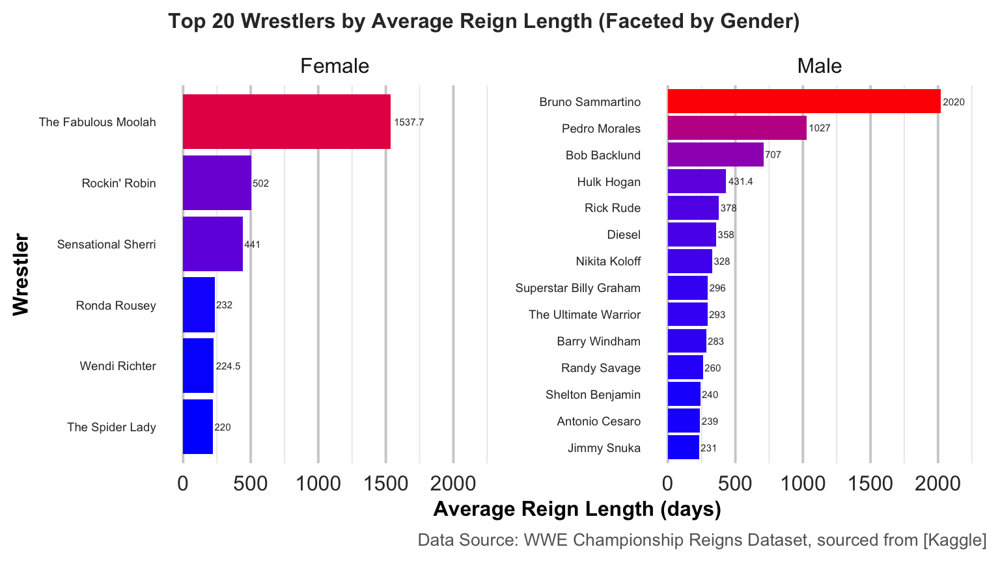

# Convert `date` to Date format and extract 'year'
wrestling_data <- wrestling_data %>%
mutate(date = dmy(date),
year = year(date)) Introduction
The WWE Championship is one of the most prestigious titles in professional wrestling, awarded to a wrestler who wins key matches, often during major WWE events. A WWE Championship reign refers to the period during which a wrestler holds the championship title, from the time they win it until they lose it in a subsequent match.
This blog post explores the history of WWE Championship reigns, analyzing how the length of title reigns has evolved across different eras of wrestling. By examining historical data, we aim to uncover patterns and trends that may reveal how WWE’s approach to its championships has changed over time.
Problem Description
The primary goal of this analysis is to identify and evaluate trends in WWE Championship reign lengths across different historical periods. We aim to determine if there are distinct patterns in reign durations, with a particular focus on whether reign lengths have decreased in recent years.
There has been speculation that more recent WWE Championship reigns have become shorter, possibly due to changing booking strategies or shifts in audience preferences. This analysis will investigate whether these changes are reflected in the data by comparing reign lengths across eras such as Pre-1980s, 1980s-1990s, and 2000s-present.
Data Description
The dataset used in this analysis was sourced from the publicly available WWE Championship Reigns Dataset available on Kaggle, which contains detailed historical data on WWE title reigns. The dataset provides information on various aspects of each wrestler’s reign, including the duration of the reign, the titleholder, and the era in which the title was held.
- name: The name of the wrestler.
- reign: The reign number, indicating how many times the wrestler has held the championship.
- days: The duration of each reign in days.
- era: The historical period, categorized into Pre-1980s, 1980s-1990s, and 2000s-present.
Unnecessary columns, such as date_of_death, cause_of_death, and link, were excluded from the analysis as they do not provide insights related to reign length.
Data Cleaning Steps:
1. Date Formatting: The date column, which records the start of each reign, was converted into a proper date format using lubridate. This step allowed the extraction of the year column, which was necessary for categorizing reigns into historical eras.
2. Missing Values: A check was performed to identify missing values, particularly in the days column (reign duration). Reigns with missing values for days were filtered out, as this information is critical for analysis.
# Handle missing values as needed
wrestling_data <- wrestling_data %>%
filter(!is.na(days))3. Categorizing Eras: Wrestlers’ reigns were classified into historical eras to examine trends over time. The eras were divided into Pre-1980, 1980s-1990s, and 2000s-present based on the year of the reign.
# Define eras
wrestling_data <- wrestling_data %>%
mutate(era = case_when(
year < 1980 ~ "Pre-1980",
year < 2000 ~ "1980s-1990s",
TRUE ~ "2000s and later"
))4. Data Aggregation: The average reign length per wrestler and by era was calculated to better understand the trends. Wrestlers were also filtered to identify the top 20 wrestlers with the longest average reigns.
# Average reign length per wrestler
average_reign_per_wrestler <- wrestling_data %>%
group_by(name) %>%
summarise(avg_reign_length = mean(days, na.rm = TRUE))
# Overall average reign length
overall_avg_reign <- mean(wrestling_data$days, na.rm = TRUE)
# Average reign length by era
average_reign_by_era <- wrestling_data %>%
group_by(era) %>%
summarise(avg_reign_length = mean(days, na.rm = TRUE))
# Filter to get the top 20 wrestlers with the longest average reign lengths
top_20_wrestlers <- average_reign_per_wrestler %>%
arrange(desc(avg_reign_length)) %>%
top_n(20, avg_reign_length)5. Gender Classification: For the top 20 wrestlers, a new column was created to distinguish between male and female wrestlers, enabling a comparison of reign lengths across genders.
# Adding a gender column to the top 20 wrestlers data
top_20_wrestlers <- top_20_wrestlers %>%
mutate(gender = case_when(
name %in% c("The Fabulous Moolah", "Rockin' Robin", "Sensational Sherri",
"Ronda Rousey", "Wendi Richter", "The Spider Lady") ~ "Female",
TRUE ~ "Male"
))Analysis
Top 20 Average Reign Length (Male and Female)

Figure Analysis
Figure 1 visualizes the top 20 WWE wrestlers by average reign length, separated by gender. This breakdown allows for clearer comparisons between male and female wrestlers and provides insight into how reign lengths differ across gender lines.
Key Insights
1. Long Reigns Across Genders
Both men and women have wrestlers with long average reign lengths, though Bruno Sammartino and The Fabulous Moolah stand out with significantly longer reigns in their respective categories.
Bruno Sammartino’s reign length exceeds 2,000 days, while Moolah held the title for an average of over 1,500 days, highlighting the dominance of these figures in their eras.
2. Shorter Reigns in the Modern Era
For both genders, modern wrestlers tend to have shorter reigns compared to their earlier counterparts.
John Cena and Ronda Rousey, despite being some of the biggest names in WWE today, have much shorter reigns than wrestlers from earlier eras.
3. Diversity of Reign Lengths
Female wrestlers such as Sensational Sherri and Rockin’ Robin have significantly longer reigns compared to their modern-day peers, like Ronda Rousey.
Male wrestlers show a wider diversity in reign lengths, from long-reigning champions like Bob Backlund to modern-day wrestlers like John Cena and Brock Lesnar, who have more frequent but shorter reigns.
Summary
This faceted analysis provides a deeper understanding of how WWE Championship reigns have evolved across genders and eras. While earlier periods, particularly the Pre-1980s, were dominated by long reigns, such as Bruno Sammartino and The Fabulous Moolah, modern eras have seen shorter, more frequent title changes, reflecting WWE’s shift towards faster-paced storytelling. Despite these trends, the diversity in reign lengths—especially among male wrestlers—indicates that while frequent title changes are the norm today, certain superstars still manage to achieve extended reigns. Overall, this analysis underscores the impact of evolving entertainment demands on WWE’s booking strategies and how champions, both male and female, have adapted to these changes over time.
Average Reign By Era
| Era | Average Reign Length (days) |
|---|---|
| 1980s-1990s | 118.4846 |
| 2000s and later | 122.5714 |
| Pre-1980 | 331.2333 |
Table Analysis
Table 1 provides insights into how WWE Championship reign lengths have evolved over time, showcasing distinct trends across three historical eras:
Key Observations:
1. Longest Reigns in the Pre-1980 Era
Pre-1980 reigns average 331.2 days, the longest of the three eras. This aligns with the traditional strategy of having fewer title changes, which allowed champions to hold the belt for extended periods.
Wrestlers like Bruno Sammartino and Bob Backlund are prime examples of champions who maintained long reigns during this era. This was likely due to the WWE’s approach at the time, where championships were used to build prestige for a few key wrestlers over many years.
2. Shorter Reigns in the 1980s-1990s
The 1980s-1990s saw a significant reduction in average reign length to 118.5 days. This era marked a shift in WWE’s strategy as professional wrestling became more focused on entertainment.
Champions like Hulk Hogan and Randy Savage still had substantial reigns, but the frequency of title defenses and changes increased as WWE transitioned into a more dynamic and faster-paced environment, with frequent title changes to maintain excitement and audience engagement.
3. Slight Increase in the 2000s and Beyond
In the 2000s and later, the average reign length slightly increased to 122.6 days, though still much shorter than the Pre-1980 era. This era reflects WWE’s adaptation to the modern entertainment landscape, where titles are frequently defended, but certain wrestlers, like John Cena and Brock Lesnar, have held longer reigns in comparison to others.
While the average reign length in this era is close to that of the 1980s-1990s, there is a more pronounced pattern of short, frequent reigns combined with occasional longer reigns by top stars, a reflection of modern-day booking strategies that prioritize storyline flexibility and fan engagement.
Summary:
The table highlights the dramatic shift in reign lengths over the decades. While earlier eras (Pre-1980) were characterized by long, stable title reigns, the later periods (1980s onward) have seen a significant decrease in average reign lengths, reflecting changes in how WWE manages its championships. This evolution is likely driven by changing audience expectations, more frequent pay-per-view events, and the need for dynamic, fast-moving storylines.
Conclusion
This analysis provides valuable insights into the trends of WWE Championship reign lengths across different historical periods. As explored in the Problem Description, we aimed to investigate whether reign lengths have shortened in recent years due to changes in WWE’s booking strategies and audience preferences. The data confirms that reign lengths have indeed become shorter in modern eras, with significant differences observed between the Pre-1980s, 1980s-1990s, and 2000s-present eras. The Pre-1980s era had the longest reigns, with champions like Bruno Sammartino holding the title for extended periods, while more recent champions, such as John Cena and Ronda Rousey, have much shorter reigns.
This shift reflects WWE’s adaptation to faster-paced storytelling and the evolving entertainment landscape, where frequent title changes are used to maintain fan interest. Furthermore, the analysis highlights diversity in reign lengths across both genders, with certain wrestlers, such as The Fabulous Moolah and Bob Backlund, maintaining extended reigns even in periods of rapid title changes. These findings are consistent with the broader cultural shifts in professional wrestling, as discussed by Witkowski (2020), where wrestling has evolved from long-term champions to a more dynamic and engaging spectacle.
Academic Citation:
Witkowski, T. (2020). The culture of professional wrestling: Historical and sociocultural perspectives. Journal of Sport and Social Issues, 44(3), 258–275.